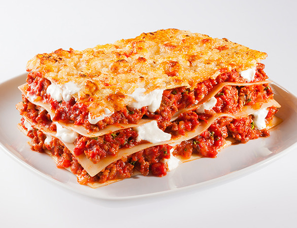

Lasaña de carne y queso

Introduccion
La lasaña es uno de esos platos que suelen gustar a todos y que, además, es muy completo. Puedes prepararla con el relleno que más te guste y, aunque el proceso es algo laborioso, el horno hace casi todo el trabajo. Te presento la receta de lasaña de carne y queso que hacemos en casa. Solemos dejarla hecha el día anterior ya que queda mucho más rica. Ya verás qué sencilla de preparar. Puedes usar sólo carne de cerdo o de ternera, pero a mí me gusta más mitad y mitad. Si lo prefieres hacer con pollo, seguro que queda también deliciosa. Si tienes niños en casa, les encantará. Ya sabes que el queso gratinado le da muchos puntos a cualquier receta en los paladares de los más pequeños. Anímate a prepararla y ya verás que se convertirá en una de esas recetas top en tu casa. Es perfecta como primer o segundo plato, o como plato único para la cena.
Indice
- Ingredientes
- Preparacion
- Video de la receta